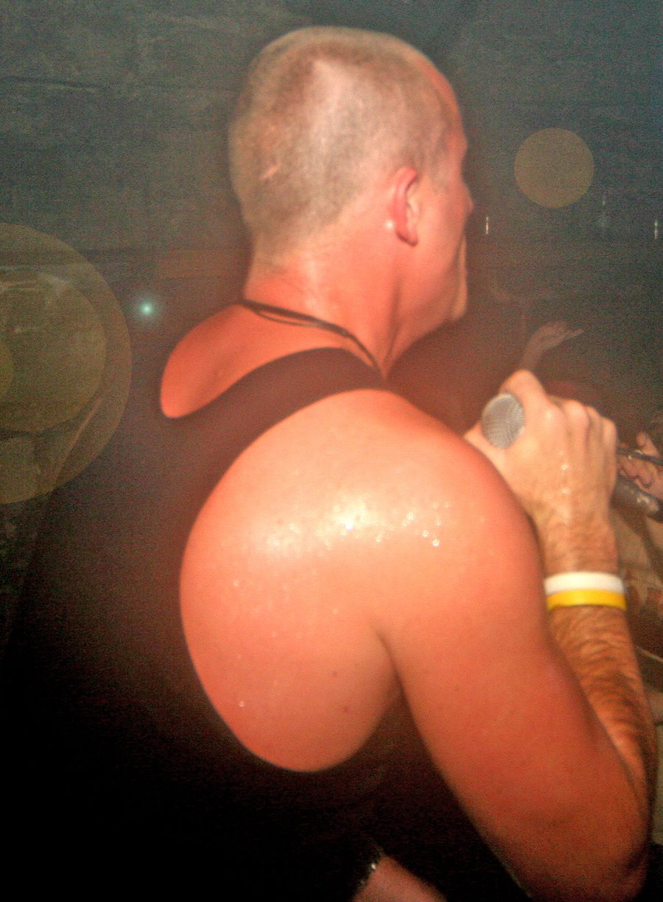

Kid Kenobi [Audio]: Breaking away from breakbeat



STREAMING AUDIO INTERVIEW
He’s one of Australia’s most revered DJs, having taken out any and every DJ poll and award worth its salt over the past few years. And, although widely regarded as a breakbeat DJ, 2006 saw his direction change, with the Kid now more than likely to drop slamming electro or jacking tech into his sets.
Having just released his latest mix CD for Ministry of Sound, the ‘Clubber’s Guide to 2007’, which was put together alongside longtime friend Goodwill, we thought we’d catch up for a chat. Listen in as Kenobi gives us a rundown on how NYE/NYD panned out, why he’s moved on from the breakbeat tag, and what he’s hoping to achieve with his radio show on Triple J.
Kid Kenobi is now on tour to support the release of ‘Clubber’s Guide to 2007’, out now through Ministry of Sound/EMI. Catch him and Goodwill at one of the following launch dates:
Thu 25th Jan – Bustin, Wollongong – Kid Kenobi & Goodwill
Fri 26th Jan – The Bloc, Penrith – Goodwill
Fri 26th Jan – King Street Hotel, Newcastle – Kid Kenobi & MC Shureshock
Sat 27th Jan – Bombay Rock, Townsville – Kid Kenobi & Goodwill
Sun 28th Jan – Sounds on Sunday, Sydney – Kid Kenobi, Goodwill & MC Shureshock
Sat 3rd Feb – Inferno, Traralgon – Goodwill
Thu 8th Feb – Discovery, Darwin – Kid Kenobi, Goodwill & MC Shureshock
Fri 9th Feb – Friction at Academy, Canberra – Kid Kenobi & Goodwill
Sat 10th Feb – Roxy, Parramatta – Kid Kenobi, Goodwill & MC Shureshock
Fri 16th Feb – Room 680, Melbourne – Kid Kenobi & Goodwill
Sat 17th Feb – Platinum, Gold Coast – Kid Kenobi, Goodwill & MC Shureshock
Fri 23rd Feb – Auckland – Kid Kenobi, MC Shureshock & Dirty South
Sat 24th Feb – Family, Brisbane – Kid Kenobi, Goodwill & MC Shureshock
Fri 2nd Mar – Club4Play, Geelong – Kid Kenobi
Fri 2nd Mar – The Standard Hotel, Lismore – Goodwill
Sat 3rd Mar – HQ, Adelaide – Goodwill
Sat 3rd Mar – Inferno, Traralgon – Kid Kenobi & MC Shureshock
Sun 4th Mar – The Reef, Bunbury – Kid Kenobi & MC Shureshock
Fri 9th Mar – The Bloc, Penrith – Kid Kenobi & MC Shureshock
Fri 9th Mar – Plantation Hotel, Coffs Harbour – Goodwill
Sat 10th Mar – Velvet Underground, Cairns – Goodwill
Sun 11th Mar – MS Fest, Launceston – Kid Kenobi, Goodwill & MC Shureshock
Fri 16th Mar – Capitol, Perth – Kid Kenobi, Goodwill & Dirty South
Sat 17th Mar – Syrup, Hobart – Kid Kenobi & MC Shureshock
Sat 17th Mar – Three Legged Dog, Albury – Goodwill
Fri 23rd Mar – Platinum Lounge, Mackay – Goodwill
Sat 24th Mar – King Street Hotel, Newcastle – Goodwill
Fri 30th Mar – The Rolling Rock, Noosa – Goodwill
Sat 31st Mar – Club4Play, Geelong – Goodwill